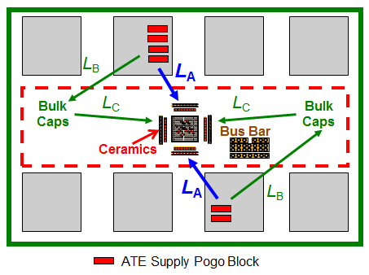

Bulk capacitor placement
Bulk capacitors have a dual role in the capacitor network design for the UHC4 / UHC4T. They provide stability for the UHC4 / UHC4T (their first priority) and charge for the DUT to maintain voltage until the UHC4 / UHC4T power supply is able to respond.
Since the response time of the UHC4 is 4 μs, bulk capacitors need to supply ample charges to avoid a voltage drop as shown in the graphic below.

Although bulk capacitors are less sensitive to their location, and therefore could be placed once all ceramic capacitors are placed, voltage drop from path losses can become significant for bulk capacitors, too.

The design goal of placing the bulk capacitors is to find the optimal location with the lowest Ldi/dt and IR drop. We recommend, placing the bulk capacitors near the DUT (see LA in the graphic above) or parallel at the sides of the DUT (see LB and LC). Low inductance traces must be used. We recommend also using wider traces to further minimize the voltage drop.
Functional changes
- Introduced in SmarTest 7.2.2